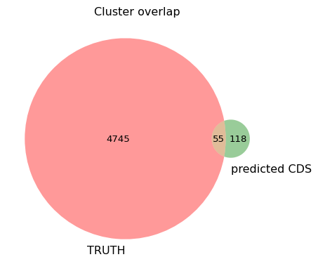

from collections import defaultdict
is_elements = defaultdict(str)
cds_features = defaultdict(list)
with open("eris-outputs/eris_gfa_shovill_sim.tsv") as output:
head = output.readline()
rows = output.readlines()
for r in rows:
row = r.split("\t")
if row[2] == "mobile_element":
is_elements[row[1]] = row[15]
for r in rows:
row = r.split("\t")
if row[2] == "CDS":
contig = row[3]
start = row[4]
end = row[5]
seq_strand = row[6]
effect = row[12]
location = row[10]
strand = row[11].replace(" ", "_")
is_name = is_elements[row[8]]
cds_features[row[1]]= [contig, start, end, seq_strand, effect, location, strand, is_name]Week 11: Assessing Eris Element Locations from GFA Relative to the Complete Chromosome; Clustering Sequences from ISOSDB and ISfinder
Overview
This week, I evaluated Eris’s performance in predicting gene locations affected by insertion sequences (IS) using draft assemblies (GFA) and compared the predictions against the complete reference chromosome and its truth feature annotation.
I also performed clustering of IS sequences from ISfinder and ISOSDB using MMseqs2 to assess database similarity. Then, I clustered predicted and reference CDS sequences to evaluate their sequence similarity and overlap.
Daily Log
07-10-2025
- Weekly project meeting
- Tom has pushed changes of eris
- We can try making ground truth of predicted genes, and manually looking
- Cluster the sequences from ISOSDB and ISfinder, see how many or much intersection between those two
- Dimas needs to start drafting the poster and report, focus on EC958
- Important dates:
- This week: finalise analysis (all above)
- 20th October: Draft of poster (comments back by Friday 25th)
- 27th October: Draft of report (comments back by Wednesday 5th Nov)
- 28th October: poster presentation to Jane
- 29th October: poster presentation at SCMB
- 6th November: Seminar presentation (2pm Bris - 3pm Melb)
- 10th November: final report due
09-10-2025
Assess effect prediction (my second attempt)
The main goal is: to identify which CDS may be impacted by IS elements (as predicted by Eris from GFA) and to evaluate how similar these predictions are to the truth annotation, particularly in terms of the IS element locations relative to the chromosome sequence.
First approach using mapping:
- First I extracted the predicted CDS from eris (GFA) in fasta fomat, in header I added information on what the element effect, location, and nearest IS name
- I got the fasta sequence with useful information, then I mapped them against EC958 chromosome, look where are predicted CDS from draft assembly relative to the chromosome
- Extract the location where the predicted CDS mapped, then I intersect them with “ground truth CDS” with at least 50% intersection
- Those that passed through the fraction threshold, I added them a flank 500 bp each at both ends (to allow intersection in the next step)
- Then I intersect them against IS ground truth
- From there, we can answer the concordance of the IS elements and CDS relationship predicted from GFA to truth CDS IS truth annotation from chromosome, right?
Read the result from eris, and thenn extract CDS information including the corresponding IS that might be impacted, location, strand, .
Extract CDS sequence from Eris
Identify CDS sequence that may be imacted by insertion from Eris, and extract the coding sequence from the gfa file
from eris.io import SeqFile
from eris.seq import Record
the_gfa = SeqFile("../../data/ecoli/assembly-simulated/shovill-outputs/contigs.gfa")
nodes_seq = defaultdict(str)
for entry in the_gfa:
if isinstance(entry, Record):
nodes_seq[entry.id] = entry.seqimport math
def writeFasta(seqname: str, sequence: str) -> str:
"""Write one sequence in FASTA format to a string and return it. This will split the sequence per 60 bp per line.
"""
fasta = ">" + seqname + "\n"
nlines = int(math.ceil((len(sequence) - 1) / 60 + 1))
for i in range(nlines):
lineofseq = "".join(sequence[i * 60 : (i + 1) * 60]) + "\n"
fasta += lineofseq
return fasta
def reverse_complement(sequence: str) -> str:
"""
make reverse complement of the input sequence
"""
result = ""
complement = {"A" : "T", "T": "A", "G": "C", "C": "G"}
for b in sequence:
result += complement[b]
return result[::-1]import re, os
try:
os.remove("cds_gfa_shovill_is.fna")
except FileNotFoundError:
pass
for feat, info in cds_features.items():
name = "|".join([feat, info[0], info[4], info[5], info[6], info[7]])
seq = nodes_seq[info[0]]
# if the feature has minus stran, we reverse complement the sequence
if info[3] == "-1":
seq = reverse_complement(seq)
start, end = int(info[1]), int(info[2])
subseq = str(seq[start:end])
fasta = writeFasta(name, subseq)
with open("cds_gfa_shovill_is.fna", "a") as output:
output.write(fasta)Compare predicted CDS (from GFA) to “truth” CDS (from NCBI chromosome)
!wc -l ../../data/ecoli/EC958_genomic_sorted.cds.edit.bed # this is cds bed file from NCBI
!grep "^>" cds_gfa_shovill_is.fna | wc -l 5093 ../../data/ecoli/EC958_genomic_sorted.cds.edit.bed
183so there are 5093 CDS in total from chromosome sequence, and 183 that might be impacted by insertions (near identifeied IS)
Let’s search where those 183 cds located in the genome, and are the location with respect of insertion elements similar or no
First, i think we can just map the predicted cds (from eris).. and look where are they, relative to the chromosome, then we can look whether there are annotated IS near them, right? ü§î
map cds from eris to chromosome, using minimap:
# using preset short read, because cds sequences are short
!minimap2 -x sr ../../data/ecoli/EC958.fasta cds_gfa_shovill_is.fna > cds_is_to_chrom.paf[M::mm_idx_gen::0.073*1.10] collected minimizers
[M::mm_idx_gen::0.086*1.38] sorted minimizers
[M::main::0.086*1.38] loaded/built the index for 1 target sequence(s)
[M::mm_mapopt_update::0.087*1.37] mid_occ = 1000
[M::mm_idx_stat] kmer size: 21; skip: 11; is_hpc: 0; #seq: 1
[M::mm_idx_stat::0.092*1.35] distinct minimizers: 834905 (98.89% are singletons); average occurrences: 1.020; average spacing: 6.000; total length: 5109767
[M::worker_pipeline::0.095*1.39] mapped 183 sequences
[M::main] Version: 2.30-r1287
[M::main] CMD: minimap2 -x sr ../../data/ecoli/EC958.fasta cds_gfa_shovill_is.fna
[M::main] Real time: 0.098 sec; CPU: 0.134 sec; Peak RSS: 0.077 GBhow many cds from eris were successfully mapped to chrom sequence?
!wc -l cds_is_to_chrom.paf
!cut -f 1 cds_is_to_chrom.paf | sort | uniq | wc -l 183 cds_is_to_chrom.paf
183all of them, and each of them is mapped uniqely..
extract the location information, where are they realtive to the chromosome coordinate and also corresponding eris information (make a bed file)
# 4th field is for query name (cds and coresponding insertion info from eris)
# 5th field is for alignment score from minimap
# 6th strand info from minimap2
!awk -v OFS="\t" '{print $6, $8, $9, $1, $12, $5}' cds_is_to_chrom.paf > cds_is_to_chrom.bed- look intersection between mapped cds here with cds coordinate from the truth (ncbi),
- add flank at both ends for each entries (to allow intersection happens), and instersect them again with IS locations (reanotatated truth). Add flank so that we know how close the cds (predicted from gfa) to the IS elements (from truth chromosome) are
- save into file for checking similarty on the location, strandness, and we can assess how well eris predict the location
# sort the entry
!bedtools sort -i cds_is_to_chrom.bed > cds_is_to_chrom.sorted.bed
# intersect them with known cds, with at least 50% fraction
!bedtools intersect -a cds_is_to_chrom.sorted.bed -b ../../data/ecoli/EC958_genomic_sorted.cds.edit.bed -f 0.5 -wa | bedtools slop -i - -g ec958.genome.size -b 1000 | bedtools intersect -a - -b ../../data/ecoli/ec958_IS.reannotated.sorted.bed -wa -wb > cds_gfa_intersect_IS_truth.bed!cut -f 4 cds_gfa_intersect_IS_truth.bed | sort | uniq | wc -l 125From 183 cds, we have 125 that passed through series of intersection step. Most of them (if not all) did not pass when we intersect them (added with flank 1000 bp at both ends) to IS. Not sure but bedtools subcommand to extend the both flanks is bedtools slop not bedtools flank.
Some predicted CDS that don’t pass the intersection step look like this:


Check on the assignment of element location relative to the CDS. We assess the report come from eris using the ground truth IS and full chromosome.
Eris defines element_location as: Signifies the relative location of the Element from the current context.
So I can check if:
Inside: the predicted CDS is part of truth IS
Downstream: the predicted CDS has IS element at its downstream (after the cds)
Upstream: the predicted CDS has IS element at its upstream (after the cds)
Flanking: the predicted CDS has an IS element overlapping it, but not fully inside.
All of those condition, we checked with the chromosome info (eris only had contigs info when it predicted)
from collections import defaultdict
cds_elements = defaultdict(str)
with open("cds_gfa_intersect_IS_truth.bed") as entries:
entries = entries.readlines()
for entry in entries:
entry = entry.split("\t")
cds_start = int(entry[1]) + 1000
cds_end = int(entry[2]) - 1000
is_start = int(entry[7])
is_end = int(entry[8])
predicted_location = entry[3].split("|")[3]
is_precited = entry[3].split("|")[-1]
is_truth = entry[9]
predicted_cds_strand = entry[5]
is_strand = entry[-1]
length_cds = cds_end - cds_start
# inside
if predicted_location == "inside":
if entry[3] not in cds_elements:
cds_elements[entry[3]] = "False"
if is_precited == is_truth.split("_")[0]:
if cds_start >= is_start and cds_end <= is_end: # part of the IS hit
cds_elements[entry[3]] = "True"
continue
# downstream
elif predicted_location == "downstream":
if entry[3] not in cds_elements:
cds_elements[entry[3]] = "False"
if predicted_cds_strand == "+":
if is_precited == is_truth.split("_")[0]:
check = max(0, cds_end - is_start)
if check / length_cds < 0.8:
cds_elements[entry[3]] = "True"
continue
elif predicted_cds_strand == "-":
if is_precited == is_truth.split("_")[0]:
check = max(0, is_end - cds_start)
if check / length_cds < 0.8:
cds_elements[entry[3]] = "True"
continue
# upstream
elif predicted_location == "upstream":
if entry[3] not in cds_elements:
cds_elements[entry[3]] = "False"
if predicted_cds_strand == "+":
if is_precited == is_truth.split("_")[0]:
check = max(0, is_end - cds_start)
if check / length_cds < 0.8:
cds_elements[entry[3]] = "True"
continue
elif predicted_cds_strand == "-":
if is_precited == is_truth.split("_")[0]:
check = max(0, cds_end - is_start)
if check / length_cds < 0.8:
cds_elements[entry[3]] = "True"
continue
elif predicted_location == "flanking":
if entry[3] not in cds_elements:
cds_elements[entry[3]] = "False"
overlap = max(0, min(cds_end, is_end) - max(cds_start, is_start))
overlap_fraction = overlap / length_cds
if is_precited == is_truth.split("_")[0]:
if 0.8 <= overlap_fraction < 1:
cds_elements[entry[3]] = "True"
continue
true_count = sum(1 for v in cds_elements.values() if v == "True")
false_count = sum(1 for v in cds_elements.values() if v == "False")
total = len(cds_elements)
for ele, val in cds_elements.items():
print(ele, val)
print(f"Total CDS: {total}")
print(f"Correct assignments: {true_count}")
print(f"Incorrect assignments: {false_count}")
print(f"Accuracy: {true_count / total:.2%}\n")1244700_00882|1244700|-|inside|same_strand|ISEc23 True
1244700_00883|1244700|-|inside|same_strand|ISEc23 True
1244816_01151|1244816|-|inside|same_strand|ISEc23 True
1176191_00082|1176191|-|flanking|opposite_strand|ISEc23 False
1245002_02024|1245002|disrupted|upstream|same_strand|ISCfr4 False
1245002_02025|1245002|-|inside|same_strand|ISCfr4 True
1245002_02026|1245002|-|downstream|same_strand|ISCfr4 False
1245002_02031|1245002|-|inside|opposite_strand|ISSen3 False
1244912_01169|1244912|-|flanking|same_strand|ISEc12 False
1245096_04606|1245096|-|inside|same_strand|ISEc1 True
1015060_00032|1015060|-|inside|same_strand|IS1397 True
1208211_00117|1208211|-|flanking|opposite_strand|IS1397 False
1234872_00176|1234872|-|inside|same_strand|IS1397 True
1241248_00251|1241248|-|inside|same_strand|IS1397 True
1244764_01147|1244764|-|inside|same_strand|IS609 True
832167_00019|832167|-|flanking|opposite_strand|IS609 False
1244458_00450|1244458|disrupted|upstream|opposite_strand|IS609 True
1244458_00486|1244458|-|flanking|same_strand|IS1397 False
1244458_00449|1244458|-|inside|same_strand|IS609 False
1244160_00403|1244160|-|inside|same_strand|IS1397 True
1208964_00119|1208964|-|inside|same_strand|IS1397 True
1216050_00137|1216050|-|inside|same_strand|IS1397 True
1241248_00250|1241248|-|inside|opposite_strand|IS1397 True
1244664_00858|1244664|-|flanking|same_strand|IS1397 False
1244018_00385|1244018|-|downstream|same_strand|IS200C False
1221552_00145|1221552|-|inside|same_strand|IS200C True
1241860_00257|1241860|-|flanking|opposite_strand|IS200C False
1244910_01167|1244910|disrupted|upstream|same_strand|IS200C False
1245062_04536|1245062|-|downstream|opposite_strand|ISEc38 True
1244402_00441|1244402|-|inside|same_strand|IS100kyp True
1244402_00440|1244402|-|inside|same_strand|IS100kyp True
1244402_00445|1244402|-|upstream|same_strand|ISEc20 False
1116087_00050|1116087|-|inside|same_strand|ISEc23 True
1240840_00244|1240840|-|flanking|opposite_strand|ISEc12 False
1221552_00144|1221552|-|inside|same_strand|IS200C True
1245038_03183|1245038|-|flanking|opposite_strand|IS1A False
1245136_04886|1245136|-|flanking|same_strand|IS1A False
1245136_04885|1245136|-|inside|opposite_strand|IS1B False
1245046_03736|1245046|-|flanking|opposite_strand|IS1A False
1245022_02114|1245022|disrupted|downstream|same_strand|MITEEc1 False
1245022_02113|1245022|disrupted|upstream|same_strand|MITEEc1 False
1171599_00078|1171599|-|inside|same_strand|IS1A True
1245138_04887|1245138|-|flanking|same_strand|IS1A False
1236016_00186|1236016|-|flanking|opposite_strand|IS1A False
1208153_00116|1208153|-|inside|same_strand|IS1A True
1244936_01278|1244936|-|flanking|opposite_strand|IS1A False
1244936_01276|1244936|-|downstream|opposite_strand|IS1203 True
1244936_01275|1244936|-|inside|same_strand|IS1203 True
1244936_01274|1244936|-|inside|same_strand|IS1203 True
1243600_00315|1243600|-|inside|same_strand|IS600 False
1243600_00328|1243600|-|inside|same_strand|IS3411 False
1245106_04649|1245106|-|flanking|same_strand|IS1F False
1243600_00316|1243600|disrupted|upstream|same_strand|IS600 False
1243600_00327|1243600|-|inside|same_strand|ISKox3 True
1242602_00264|1242602|-|inside|same_strand|IS30 True
1242602_00265|1242602|-|flanking|opposite_strand|IS600 False
1244674_00860|1244674|-|inside|same_strand|IS682 False
1244674_00861|1244674|-|inside|same_strand|IS682 False
1244674_00862|1244674|-|inside|same_strand|IS682 False
1244674_00878|1244674|-|upstream|opposite_strand|ISEc45 False
1244674_00874|1244674|-|downstream|same_strand|IS2 False
1244674_00873|1244674|-|inside|same_strand|IS2 True
1244674_00872|1244674|-|inside|same_strand|IS2 True
1244674_00871|1244674|disrupted|upstream|same_strand|IS2 False
1244674_00863|1244674|-|upstream|opposite_strand|IS682 True
1244674_00879|1244674|-|inside|same_strand|ISEch14 False
1244674_00880|1244674|-|inside|same_strand|ISEch14 False
1125059_00056|1125059|-|inside|same_strand|ISEc8 False
1240608_00243|1240608|-|inside|same_strand|ISEc22 True
1243212_00271|1243212|-|flanking|same_strand|ISEc22 True
1244994_01721|1244994|-|upstream|same_strand|ISKpn42 False
1244994_01722|1244994|-|inside|same_strand|ISKpn42 False
1244994_01723|1244994|-|inside|same_strand|ISEc10 True
1244994_01724|1244994|-|inside|same_strand|ISEc10 True
1244994_01725|1244994|-|downstream|same_strand|ISEc10 False
1244434_00447|1244434|-|inside|same_strand|ISEc52 True
1206755_00112|1206755|-|upstream|opposite_strand|IS600 False
1245082_04546|1245082|-|inside|same_strand|ISEc52 True
1245080_04545|1245080|-|inside|same_strand|ISEc52 True
1244570_00584|1244570|disrupted|downstream|opposite_strand|IS609 True
1244764_01146|1244764|disrupted|upstream|same_strand|IS609 False
1244706_00887|1244706|-|inside|same_strand|IS1F True
1202947_00109|1202947|-|inside|same_strand|IS1X2 False
1215098_00134|1215098|-|inside|same_strand|IS1F True
1236482_00188|1236482|-|inside|same_strand|IS1F True
1245106_04640|1245106|disrupted|downstream|same_strand|ISSen10 False
1245106_04639|1245106|-|inside|same_strand|ISSen10 True
1245106_04638|1245106|disrupted|upstream|same_strand|ISSen10 False
1002621_00031|1002621|-|flanking|opposite_strand|IS3411 False
1244656_00832|1244656|disrupted|upstream|opposite_strand|IS3411 False
1244656_00833|1244656|-|inside|same_strand|ISEc43 False
1244656_00844|1244656|-|inside|same_strand|ISCro1 True
1244656_00843|1244656|-|upstream|opposite_strand|ISCro1 False
1244656_00845|1244656|-|inside|same_strand|ISCro1 True
1244656_00846|1244656|-|inside|same_strand|ISCro1 True
1244656_00837|1244656|disrupted|upstream|same_strand|ISEc49 False
1245118_04670|1245118|-|flanking|opposite_strand|ISEc23 False
1244700_00884|1244700|-|inside|same_strand|ISEc23 True
1159225_00072|1159225|-|inside|same_strand|ISEc23 True
1245048_03750|1245048|-|flanking|opposite_strand|ISSd1 False
1245048_03746|1245048|-|inside|same_strand|ISEc9 True
1245048_03748|1245048|upregulated|downstream|same_strand|ISEc9 False
1243758_00330|1243758|-|inside|same_strand|ISSd1 False
976171_00026|976171|-|flanking|same_strand|IS600 False
1228204_00159|1228204|-|inside|same_strand|IS600 True
1206755_00111|1206755|-|inside|same_strand|IS600 True
1243586_00314|1243586|-|inside|same_strand|ISEc52 False
1158833_00071|1158833|-|inside|same_strand|IS1F True
1244320_00406|1244320|-|downstream|opposite_strand|ISEc8 True
1244320_00405|1244320|-|inside|same_strand|ISEc8 True
1244320_00407|1244320|-|inside|same_strand|IS1F False
1244320_00408|1244320|-|flanking|opposite_strand|IS1X2 False
1234604_00174|1234604|-|inside|same_strand|ISEc8 True
1235120_00177|1235120|-|flanking|opposite_strand|ISEc8 False
1236644_00191|1236644|-|inside|same_strand|ISEc8 True
1236644_00190|1236644|-|inside|same_strand|ISEc8 True
1236644_00189|1236644|-|inside|same_strand|ISEc8 True
1244742_00933|1244742|-|inside|same_strand|ISEc12 True
1244742_00934|1244742|-|inside|same_strand|ISEc12 True
1245024_02247|1245024|-|downstream|same_strand|IS911 False
1245024_02220|1245024|-|upstream|same_strand|ISSen1 False
1245024_02221|1245024|disrupted|downstream|same_strand|ISSen1 False
1244890_01166|1244890|-|flanking|same_strand|IS1F False
1244638_00699|1244638|-|inside|same_strand|ISEc53 True
1244638_00698|1244638|-|inside|same_strand|ISEc53 True
Total CDS: 125
Correct assignments: 61
Incorrect assignments: 64
Accuracy: 48.80%
We look closer, most of the incorrect assigments mistakenly assigned downstream location to upstream location, and vice versa.

1244910_01167 has IS element IS200C at its downstream, and 1244018_00385 has IS element IS200C at its upstream
but eris says: 1244910_01167|1244910|disrupted|upstream|same_strand|IS200C False 1244018_00385|1244018|-|downstream|same_strand|IS200C False
CDS 1244910_01167 has IS element IS200C at its upstream, 1244018_00385 has IS element IS200C at its downstream.

the ISEc9 lies at the upstream of the CDS, but eris predicted at downstream.
1245048_03748|1245048|upregulated|downstream|same_strand|ISEc9 False

Eris predicted: 1245002_02024|1245002|disrupted|upstream|same_strand|ISCfr4 False 1245002_02025|1245002|-|inside|same_strand|ISCfr4 True 1245002_02026|1245002|-|downstream|same_strand|ISCfr4 False
but: ISCfr4 lies at downstream of 1245002_02024, and it is at upstream 1245002_02026

Eris predicted ISEc53 at the downstream of the CDS, but it is at its upstream

Eris predicted ISSen10 at the upstream of the CDS 1245106_04638, but it is at downstrem of it.
Eris also predicted wrong here. It should be: IS2 lies at the downstream of 1244674_00871 and at the upstream of 1244674_00874
Several correct assignments by Eris here:

1245062_04536|1245062|-|downstream|opposite_strand|ISEc38 True
ISEc38 element is at the downstream of CDS 1245062_04536
1244320_00406|1244320|-|downstream|opposite_strand|ISEc8 True
ISEc8 lies at the downstream of CDS 1244320_00406
1244570_00584|1244570|disrupted|downstream|opposite_strand|IS609 True
Correct as the IS609 elements appear at the downstream of 1244570_00584
Check the entries that don’t pass intersection with IS, in theory they should not be reported for the insertion effect (because the proximity more than 150), no?
Eris still predicted CDS 1245096_04607 will be disrupted, although it far from the nearest IS element ISec1 (>150 bp) in the full chromosome

Eris the detec IS that don’t exist in truth, so they don’t overlap
Summary
- All the exracted predicted CDS from gfa file were succesfully mapped to the reference sequence uniquely.
- All those sequences intersect with at least small fraction with known/truth CDS (they mostly are actually CDS)
- Based on the checking using IGV and phython cod above, I can say:
- Most of the time, eris correctly predicted the CDS are inside the IS
- Most of the time, eris incorrectly predicted between downstream and upstream, confised between two
- Most of the time eris correctly predicted the corresponding IS for each predicted CDS
- Some CDS that dont intersect with truth IS because their IS are overcalled by eris
12-10-2025
Using clustering MMSEQ2
cluster the ISfinder and ISOSDB using mmseqs2
!cat ../../ISOSDB.V3.fna ../../eris/src/eris/data/IS.fna > combined_ISOSDB_ISfinder.fna
!mmseqs easy-cluster combined_ISOSDB_ISfinder.fna clusterIS tmp --min-seq-id 0.8 -c 0.8 -s 7 --threads 4Look for the intersections
from collections import defaultdict
clusters = defaultdict(list)
with open("clusterIS_cluster.tsv") as entries:
for entry in entries.readlines():
cluster, member = entry.split("\t")
clusters[cluster].append(member)
print(f"There are {len(clusters)} clusters")
# classify clusters
isosdb_only = 0
isfinder_only = 0
both = 0
isosdb_clusters = []
isfinder_clusters = []
both_clusters = []
for cluster_id, members in clusters.items():
has_isosdb = any(m.startswith("ISOSDB") for m in members)
has_isfinder = any(not m.startswith("ISOSDB") for m in members)
if has_isosdb and has_isfinder:
both += 1
both_clusters.append(cluster_id)
elif has_isosdb:
isosdb_only += 1
isosdb_clusters.append(cluster_id)
elif has_isfinder:
isfinder_only += 1
isfinder_clusters.append(cluster_id)
import matplotlib.pyplot as plt
from matplotlib_venn import venn2
# sizes
only_isosdb = len(isosdb_clusters)
only_isfinder = len(isfinder_clusters)
overlap = len(both_clusters)
# Venn diagram
plt.figure(figsize=(5,5))
venn2(subsets=(only_isosdb, only_isfinder, overlap),
set_labels=("ISOSDB", "isfinder DB"))
plt.title("Cluster overlap")
plt.show()
print("Clusters with both ISOSDB and ISfinder:", both)
print("Clusters only ISOSDB:", isosdb_only)
print("Clusters only ISfinder:", isfinder_only)There are 16655 clustersClusters with both ISOSDB and ISfinder: 1775
Clusters only ISOSDB: 12397
Clusters only ISfinder: 2483Extract CDS sequence from complete chromosome
we can use seqkit to extract sequence from fasta format
!seqkit subseq --bed ../../data/ecoli/EC958_genomic_sorted.cds.edit.bed ../../data/ecoli/EC958.fasta > cds_chrom_all.fnacombine with predicted CDS from eris, and run clustering using mmseq2 again. The predcited CDS sequence is expected to be intersected with the the truth CDS
!cat cds_chrom_all.fna cds_gfa_shovill_is.fna > combined_cds_alltruth_eris.fna
!mmseqs easy-cluster combined_cds_alltruth_eris.fna clusterCDSall tmp --min-seq-id 0.8 -c 0.8 -s 7 --threads 4from collections import defaultdict
clusters = defaultdict(list)
with open("clusterCDSall_cluster.tsv") as entries:
for entry in entries.readlines():
cluster, member = entry.split("\t")
clusters[cluster].append(member)
print(f"There are {len(clusters)} clusters")
# classify clusters
truth_only = 0
predicted_only = 0
both = 0
truth_clusters = []
predicted_clusters = []
both_clusters = []
for cluster_id, members in clusters.items():
has_truth = any(m.startswith("HG941718.1") for m in members)
has_predicted = any(not m.startswith("HG941718.1") for m in members)
if has_truth and has_predicted:
both += 1
both_clusters.append(cluster_id)
elif has_truth:
truth_only += 1
truth_clusters.append(cluster_id)
elif has_predicted:
predicted_only += 1
predicted_clusters.append(cluster_id)
import matplotlib.pyplot as plt
from matplotlib_venn import venn2
# sizes
only_truth = len(truth_clusters)
only_predicted = len(predicted_clusters)
overlap = len(both_clusters)
# Venn diagram
plt.figure(figsize=(5,5))
venn2(subsets=(only_truth, only_predicted, overlap),
set_labels=("TRUTH", "predicted CDS"))
plt.title("Cluster overlap")
plt.show()
print("Clusters with both TRUTH and predicted:", both)
print("Clusters only TRUTH:", truth_only)
print("Clusters only predicted:", predicted_only)There are 4918 clusters
Clusters with both TRUTH and predicted: 55
Clusters only TRUTH: 4745
Clusters only predicted: 118print cluster that have intersection from both:
i = 1
for clust, mem in clusters.items():
has_hg = any(e.startswith("HG") for e in mem)
has_non_hg = any(not e.startswith("HG") for e in mem)
if has_hg and has_non_hg:
print(f"Cluster {i}: {mem}")
i += 1Cluster 1: ['HG941718.1_233813-234238:+\n', 'HG941718.1_2265919-2266344:+\n', 'HG941718.1_3334643-3335068:+\n', 'HG941718.1_4925174-4925599:+\n', '1244700_00882|1244700|-|inside|same_strand|ISEc23\n']
Cluster 2: ['HG941718.1_234235-234585:+\n', 'HG941718.1_2266341-2266691:+\n', 'HG941718.1_3335065-3335415:+\n', 'HG941718.1_4925596-4925946:+\n', '1244700_00883|1244700|-|inside|same_strand|ISEc23\n']
Cluster 3: ['HG941718.1_2104090-2104614:+\n', '1244458_00450|1244458|disrupted|upstream|opposite_strand|IS609\n']
Cluster 4: ['HG941718.1_2142533-2142991:-\n', 'HG941718.1_2284952-2285410:-\n', '1221552_00144|1221552|-|inside|same_strand|IS200C\n', '1241860_00257|1241860|-|flanking|opposite_strand|IS200C\n']
Cluster 5: ['HG941718.1_2385473-2386087:-\n', '1245046_03736|1245046|-|flanking|opposite_strand|IS1A\n']
Cluster 6: ['HG941718.1_1359686-1360138:+\n', '1245002_02033|1245002|-|inside|same_strand|ISEc24\n']
Cluster 7: ['HG941718.1_1629133-1629669:+\n', '1245096_04607|1245096|disrupted|downstream|opposite_strand|ISEc1\n']
Cluster 8: ['HG941718.1_3324614-3324929:-\n', '1244674_00872|1244674|-|inside|same_strand|IS2\n']
Cluster 9: ['HG941718.1_4156672-4158180:-\n', '1245106_04638|1245106|disrupted|upstream|same_strand|ISSen10\n']
Cluster 10: ['HG941718.1_4778064-4778639:-\n', '1245118_04681|1245118|-|upstream|same_strand|ISEc49\n']
Cluster 11: ['HG941718.1_4942430-4943337:-\n', 'HG941718.1_3314364-3315260:+\n', '1243758_00330|1243758|-|inside|same_strand|ISSd1\n']
Cluster 12: ['HG941718.1_4943337-4943586:-\n', 'HG941718.1_3312881-3313186:+\n', '1228204_00159|1228204|-|inside|same_strand|IS600\n']
Cluster 13: ['HG941718.1_4976216-4976365:+\n', '1245024_02220|1245024|-|upstream|same_strand|ISSen1\n']
Cluster 14: ['1111349_00049|1111349|-|flanking|same_strand|ISEc22\n', 'HG941718.1_3338120-3338305:-\n']
Cluster 15: ['1242602_00264|1242602|-|inside|same_strand|IS30\n', 'HG941718.1_3313206-3314357:+\n']
Cluster 16: ['1243600_00327|1243600|-|inside|same_strand|ISKox3\n', 'HG941718.1_3295132-3295881:-\n']
Cluster 17: ['1244320_00406|1244320|-|downstream|opposite_strand|ISEc8\n', 'HG941718.1_4954441-4955799:+\n']
Cluster 18: ['1244402_00440|1244402|-|inside|same_strand|IS100kyp\n', 'HG941718.1_2253124-2254146:-\n']
Cluster 19: ['1244402_00441|1244402|-|inside|same_strand|IS100kyp\n', 'HG941718.1_2252432-2253127:-\n']
Cluster 20: ['1244458_00486|1244458|-|flanking|same_strand|IS1397\n', 'HG941718.1_2134679-2135314:+\n']
Cluster 21: ['1244570_00584|1244570|disrupted|downstream|opposite_strand|IS609\n', 'HG941718.1_3819356-3820234:+\n']
Cluster 22: ['1244638_00698|1244638|-|inside|same_strand|ISEc53\n', 'HG941718.1_5016081-5016599:-\n']
Cluster 23: ['1244638_00699|1244638|-|inside|same_strand|ISEc53\n', 'HG941718.1_5014842-5016062:-\n']
Cluster 24: ['1244638_00700|1244638|-|downstream|same_strand|ISEc53\n', 'HG941718.1_5012444-5013160:-\n']
Cluster 25: ['1244656_00832|1244656|disrupted|upstream|opposite_strand|IS3411\n', 'HG941718.1_4159665-4160326:+\n']
Cluster 26: ['1244656_00844|1244656|-|inside|same_strand|ISCro1\n', 'HG941718.1_4171182-4171859:+\n']
Cluster 27: ['1244656_00845|1244656|-|inside|same_strand|ISCro1\n', 'HG941718.1_4171859-4172206:+\n']
Cluster 28: ['1244656_00846|1244656|-|inside|same_strand|ISCro1\n', 'HG941718.1_4172226-4173797:+\n']
Cluster 29: ['1244674_00863|1244674|-|upstream|opposite_strand|IS682\n', 'HG941718.1_3333065-3333982:-\n']
Cluster 30: ['1244674_00871|1244674|disrupted|upstream|same_strand|IS2\n', 'HG941718.1_3325081-3326067:-\n']
Cluster 31: ['1244674_00873|1244674|-|inside|same_strand|IS2\n', 'HG941718.1_3323701-3324614:-\n']
Cluster 32: ['1244674_00874|1244674|-|downstream|same_strand|IS2\n', 'HG941718.1_3321111-3323201:-\n']
Cluster 33: ['1244674_00875|1244674|-|upstream|opposite_strand|ISEc83\n', 'HG941718.1_3320007-3320249:-\n']
Cluster 34: ['1244674_00877|1244674|-|downstream|opposite_strand|ISEc45\n', 'HG941718.1_3319138-3319353:-\n']
Cluster 35: ['1244764_01146|1244764|disrupted|upstream|same_strand|IS609\n', 'HG941718.1_3821868-3823592:-\n']
Cluster 36: ['1244936_01276|1244936|-|downstream|opposite_strand|IS1203\n', 'HG941718.1_3292382-3292615:+\n']
Cluster 37: ['1244994_01721|1244994|-|upstream|same_strand|ISKpn42\n', 'HG941718.1_3358737-3359630:+\n']
Cluster 38: ['1244994_01722|1244994|-|inside|same_strand|ISKpn42\n', 'HG941718.1_3360089-3360271:+\n']
Cluster 39: ['1244994_01723|1244994|-|inside|same_strand|ISEc10\n', 'HG941718.1_3360620-3362119:+\n']
Cluster 40: ['1244994_01725|1244994|-|downstream|same_strand|ISEc10\n', 'HG941718.1_3363497-3364480:+\n']
Cluster 41: ['1245002_02024|1245002|disrupted|upstream|same_strand|ISCfr4\n', 'HG941718.1_1365153-1365521:+\n']
Cluster 42: ['1245002_02025|1245002|-|inside|same_strand|ISCfr4\n', 'HG941718.1_1365699-1366323:+\n']
Cluster 43: ['1245002_02026|1245002|-|downstream|same_strand|ISCfr4\n', 'HG941718.1_1366518-1369175:+\n']
Cluster 44: ['1245002_02030|1245002|disrupted|downstream|opposite_strand|ISSen3\n', 'HG941718.1_1371050-1371247:+\n']
Cluster 45: ['1245022_02113|1245022|disrupted|upstream|same_strand|MITEEc1\n', 'HG941718.1_3237500-3238663:-\n']
Cluster 46: ['1245022_02114|1245022|disrupted|downstream|same_strand|MITEEc1\n', 'HG941718.1_3236207-3237286:-\n']
Cluster 47: ['1245048_03746|1245048|-|inside|same_strand|ISEc9\n', 'HG941718.1_4937619-4938881:+\n']
Cluster 48: ['1245048_03748|1245048|upregulated|downstream|same_strand|ISEc9\n', 'HG941718.1_4940404-4941549:+\n']
Cluster 49: ['1245062_04536|1245062|-|downstream|opposite_strand|ISEc38\n', 'HG941718.1_2242649-2243683:+\n']
Cluster 50: ['1245088_04557|1245088|-|upstream|same_strand|ISEc47\n', 'HG941718.1_2279690-2280019:-\n']
Cluster 51: ['1245096_04606|1245096|-|inside|same_strand|ISEc1\n', 'HG941718.1_1647673-1648809:+\n']
Cluster 52: ['1245106_04639|1245106|-|inside|same_strand|ISSen10\n', 'HG941718.1_4156109-4156588:-\n']
Cluster 53: ['1245106_04640|1245106|disrupted|downstream|same_strand|ISSen10\n', 'HG941718.1_4155643-4156125:-\n', 'HG941718.1_4182223-4182633:-\n']
Cluster 54: ['1245118_04670|1245118|-|flanking|opposite_strand|ISEc23\n', 'HG941718.1_4924600-4924836:-\n']
Cluster 55: ['1245118_04678|1245118|-|downstream|opposite_strand|ISEc13\n', 'HG941718.1_4916875-4917639:-\n']Tried to filter first the truth CDS region that near to insertion elemeent, extraxt the sequence and then combined with predicted CDS from eris, tehn run clustering.
!grep "^HG941718\.1" ../../data/ecoli/EC958_genomic_sorted.cds.edit.bed | bedtools slop -i - -g ec958.genome.size -b 100000 | bedtools intersect -a - -b ../../data/ecoli/ec958_IS.reannotated.sorted.bed > temp
!seqkit subseq --bed temp ../../data/ecoli/EC958.fasta > cds_truth_with_is_intersect.fna
!rm temp
!cat cds_truth_with_is_intersect.fna cds_gfa_shovill_is.fna > combined_cds_truth_eris.fna
!mmseqs easy-cluster combined_cds_truth_eris.fna clusterCDS tmp --min-seq-id 0.8 -c 0.8 -s 7 --threads 4from collections import defaultdict
clusters = defaultdict(list)
with open("clusterCDS_cluster.tsv") as entries:
for entry in entries.readlines():
cluster, member = entry.split("\t")
clusters[cluster].append(member)
print(f"There are {len(clusters)} clusters")
# classify clusters
truth_only = 0
predicted_only = 0
both = 0
truth_clusters = []
predicted_clusters = []
both_clusters = []
for cluster_id, members in clusters.items():
has_truth = any(m.startswith("HG941718.1") for m in members)
has_predicted = any(not m.startswith("HG941718.1") for m in members)
if has_truth and has_predicted:
both += 1
both_clusters.append(cluster_id)
elif has_truth:
truth_only += 1
truth_clusters.append(cluster_id)
elif has_predicted:
predicted_only += 1
predicted_clusters.append(cluster_id)
import matplotlib.pyplot as plt
from matplotlib_venn import venn2
# sizes
only_truth = len(truth_clusters)
only_predicted = len(predicted_clusters)
overlap = len(both_clusters)
# Venn diagram
plt.figure(figsize=(5,5))
venn2(subsets=(only_truth, only_predicted, overlap),
set_labels=("TRUTH", "predicted CDS"))
plt.title("Cluster overlap")
plt.show()
print("Clusters with both TRUTH and predicted:", both)
print("Clusters only TRUTH:", truth_only)
print("Clusters only predicted:", predicted_only)There are 300 clusters
Clusters with both TRUTH and predicted: 14
Clusters only TRUTH: 127
Clusters only predicted: 159Run eris with annotation file
Prepare the annotation file in bed file with something like this tat eris will accept it:
!awk 'BEGIN{OFS="\t"} {$7="."; $8="CDS"; $9="0"; $10="ID=" $4 ";source=genbank"; print $0}' ../../data/ecoli/EC958_genomic_sorted.cds.edit.bed > ../../data/ecoli/EC958.bed
!head -n 5 ../../data/ecoli/EC958.bedHG941718.1 189 255 cds-WP_001386572.1 . + . CDS 0 ID=cds-WP_001386572.1;source=genbank
HG941718.1 336 2799 cds-WP_001264707.1 . + . CDS 0 ID=cds-WP_001264707.1;source=genbank
HG941719.1 407 626 cds-WP_000813634.1 . + . CDS 0 ID=cds-WP_000813634.1;source=genbank
HG941720.1 624 1332 cds-WP_001296720.1 . + . CDS 0 ID=cds-WP_001296720.1;source=genbank
HG941719.1 627 933 cds-WP_001159868.1 . + . CDS 0 ID=cds-WP_001159868.1;source=genbank!eris scan ../../data/ecoli/EC958.fasta -a ../../data/ecoli/EC958.bed > eris-outputs/eris_anot.tsv
!head -n 10 eris-outputs/eris_anot.tsvGenome Feature Type Contig Start End Strand Partial Element Element_distance Element_location Element_strand Element_effect Percent_identity Percent_coverage Name Family Group Synonyms Origin IR DR
EC958 cds-EC958_RS01070 CDS HG941718.1 233363 233726 -1 False bef8e9bb-25fd-43d3-ad80-baf4b79a70f1 1bp upstream opposite strand disrupted - - None - - - - - -
EC958 bef8e9bb-25fd-43d3-ad80-baf4b79a70f1 mobile_element HG941718.1 233727 236259 1 False bef8e9bb-25fd-43d3-ad80-baf4b79a70f1 - - - - 99.96050552922591 100.0 ISEc23 IS66 None Escherichia coli 20/24 8
EC958 cds-WP_000422741.1 CDS HG941718.1 233812 234238 1 False bef8e9bb-25fd-43d3-ad80-baf4b79a70f1 - inside same strand - - - None - - - - - -
EC958 cds-WP_000624722.1 CDS HG941718.1 234234 234585 1 False bef8e9bb-25fd-43d3-ad80-baf4b79a70f1 - inside same strand - - - None - - - - - -
EC958 bef8e9bb-25fd-43d3-ad80-baf4b79a70f1_promoter_1 regulatory HG941718.1 234579 234610 1 False bef8e9bb-25fd-43d3-ad80-baf4b79a70f1 - inside - - - - - - - - - - -
EC958 cds-WP_000080195.1 CDS HG941718.1 234615 236229 1 False bef8e9bb-25fd-43d3-ad80-baf4b79a70f1 - inside same strand - - - None - - - - - -
EC958 cds-EC958_RS01090 CDS HG941718.1 236260 236728 -1 False bef8e9bb-25fd-43d3-ad80-baf4b79a70f1 1bp downstream opposite strand disrupted - - None - - - - - -
EC958 cds-WP_001036491.1 CDS HG941718.1 813465 814899 1 False 1fdcdb6f-47e2-4eb9-93c3-f406137919f0 3bp downstream opposite strand disrupted - - None - - - - - -
EC958 1fdcdb6f-47e2-4eb9-93c3-f406137919f0 mobile_element HG941718.1 814902 815025 -1 False 1fdcdb6f-47e2-4eb9-93c3-f406137919f0 - - - - 96.7479674796748 100.0 MITEEc1 IS630 None Escherichia coli 18/23 2